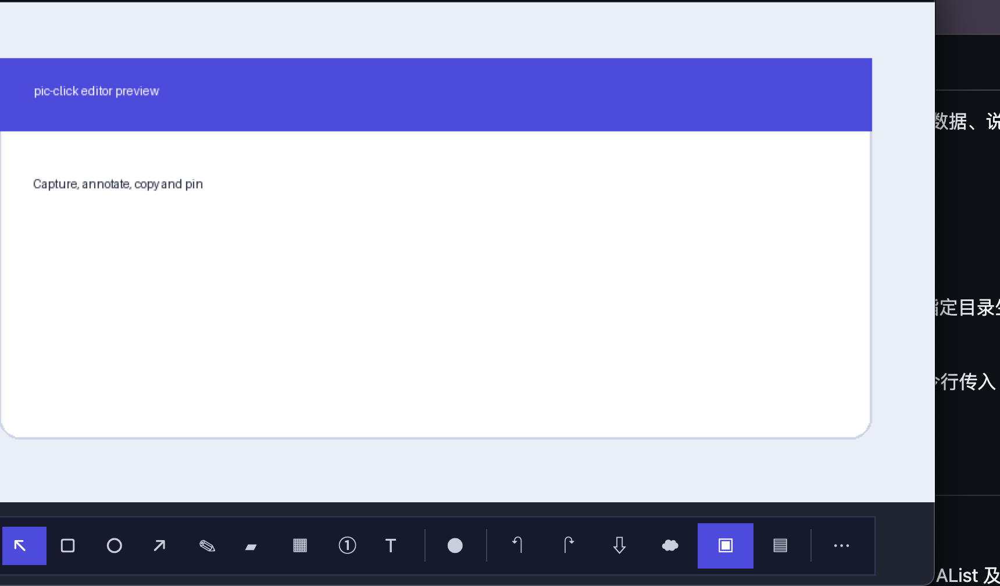
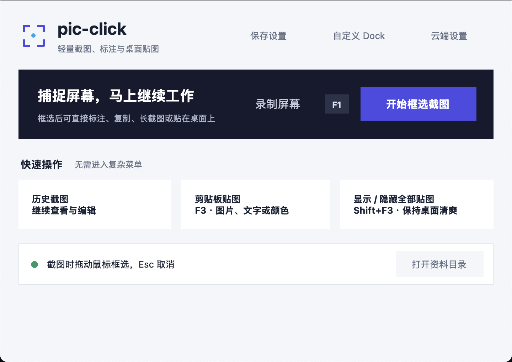

区域与长截图
快速框选屏幕内容，也能继续拼接滚动页面。
Windows · Local-first · Open Source
pic-click 把截图、标注、长截图、录屏和桌面贴图收进一条 Dock。常用能力直接出现，更多选择随时展开。

少一点界面，多一点专注
不用在多个窗口间来回跳转。框选完成后，标注、复制、保存、贴图和长截图都在同一条 Dock 上。
当前界面
这里展示的是当前项目的真实界面与关键区域，而不是脱离实现的概念图。

实用能力
围绕截图后的连续工作流设计，让保存信息和表达想法少一步。
快速框选屏幕内容，也能继续拼接滚动页面。
直接录下操作过程并保存为 MJPEG AVI，无需跳转第三方工具。
矩形、圆形、箭头、画笔、马赛克、序号和文字集中在 Dock。
把截图、剪贴板文字或颜色固定在桌面上，随用随看。
回到之前的截图继续查看和编辑，减少重复工作。
默认本地保存，同时提供 WebDAV 与 HTTP API 连接能力。
三步完成
默认流程足够短，自定义空间也足够大。
按下快捷键，立即捕捉需要的内容。
标注重点、打码信息，或将画面钉在桌面。
带着结果回到原来的任务，不被工具打断。
快捷启动
开源 · 本地优先
查看源代码、提交建议，或按自己的工作方式继续改造。